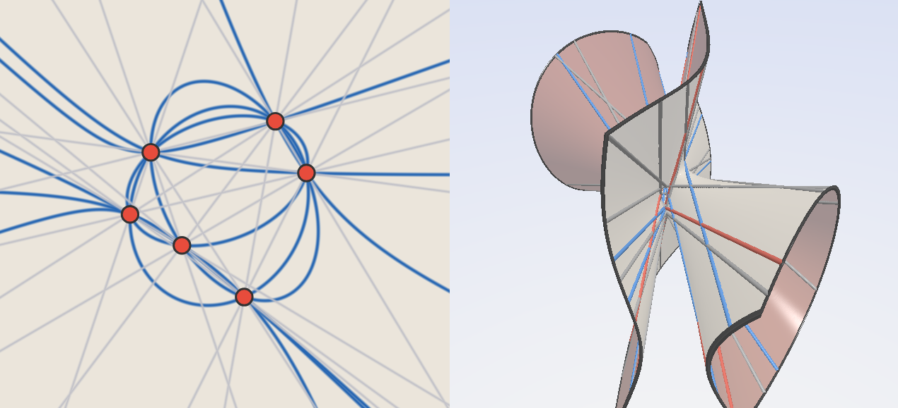
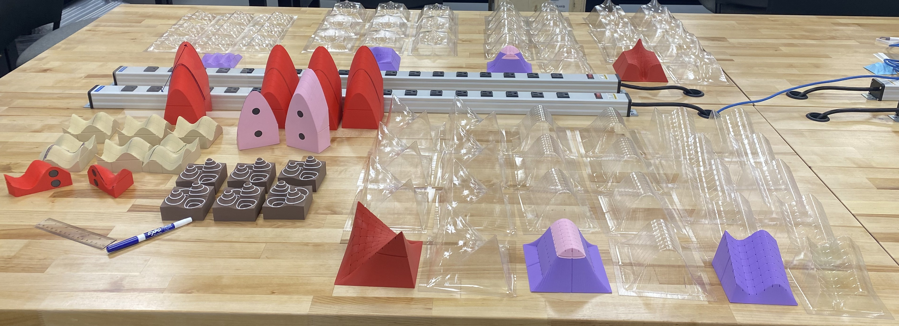
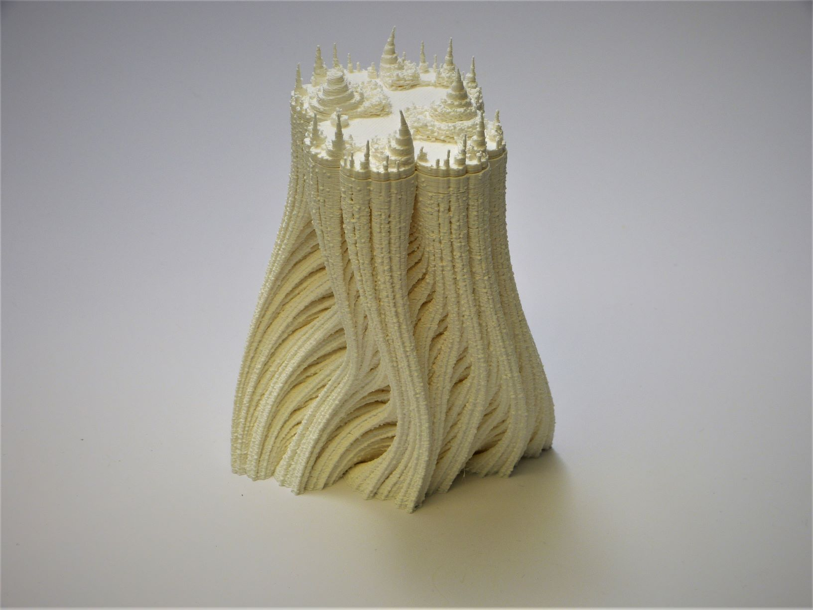
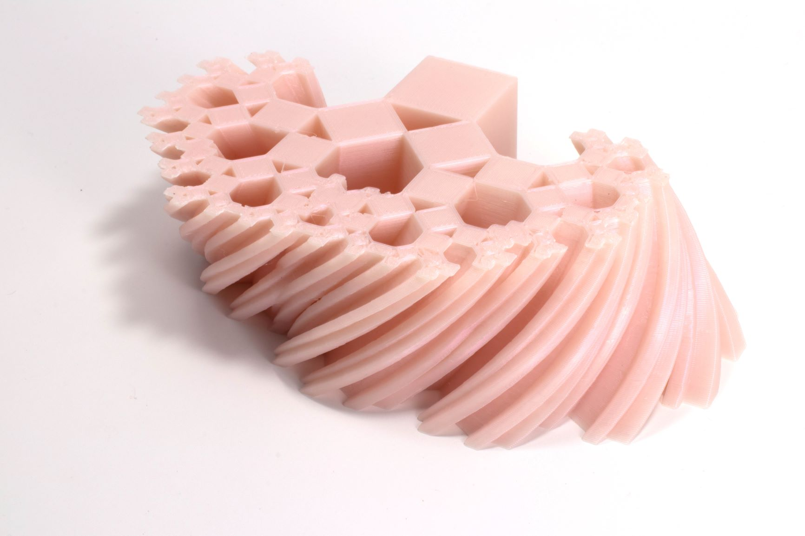
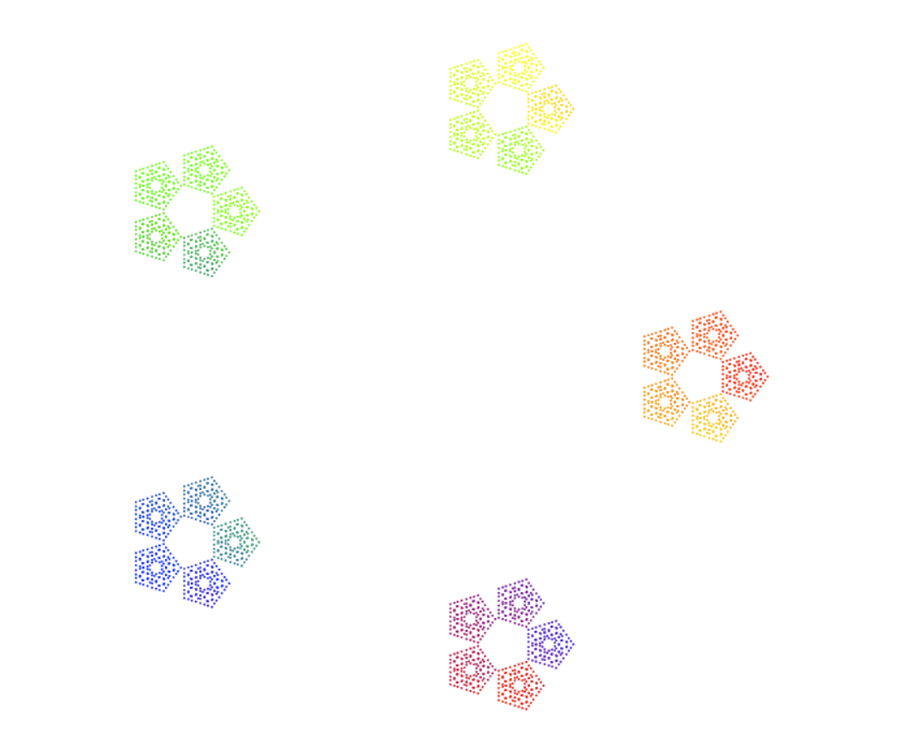
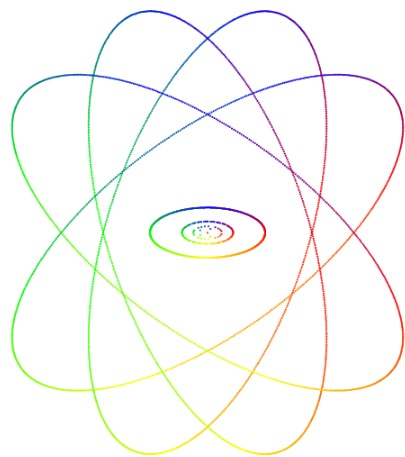
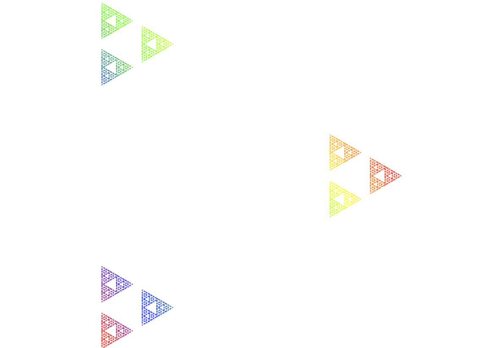
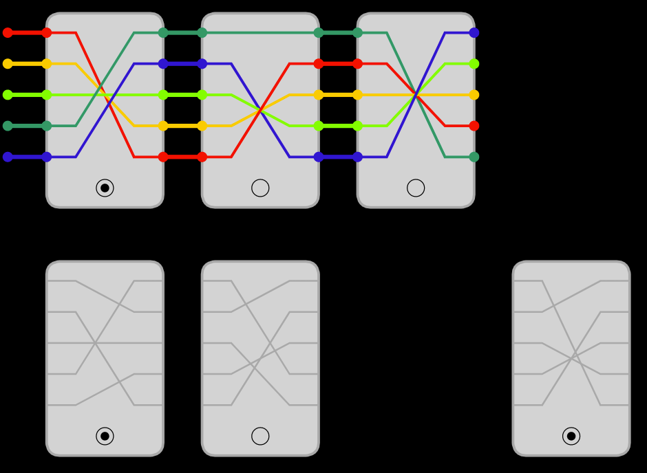

Mathematical Illustration
Mathematical illustration is the use of images, interactive media, physical models, and computation as tools for mathematical thinking. Illustrations can serve as communication or outreach, and beyond that, these objects are often integral to the process of mathematical discovery itself. My work ranges from interactive visualizations and digital fabrication to mathematical games and computational experiments.
**Indicates undergraduate collaborator.
Cubic Lines (2026)

An interactive visualizer which interactively illustrates how every cubic surface is the blowup of the plane at 6 general points. The user can manually drag the 6 points around and watch the cubic surface deform along with its 27 lines in real time.
You can play with it yourself here.
Tangible Calculus (2025)

Supported by an internal curricular innovation grant, we designed and built three-dimensional physical models to help us bolster conceptual understanding in the calculus sequence while also designing activities and lectures to work these models organically into the curriculum. We used the Explore Lab Makerspace to design and fabricate over 80 3D printed and vacuum formed models which have already deployed for use in our courses.
This project was inspired and influenced by the Manipulative Calculus project at Harvard University
Animated Escape Time Fractals (2024-present)


Software for visualizing escape-time fractals arising from discrete dynamical systems on the complex plane. We create animated visualizations as well as static animations, a technique we developed in which the frames of an animation are compressed into a single 3D printable object. The resulting sculptures allow an entire dynamical process to be viewed simultaneously from different perspectives.
Starting from the classical escape-time algorithm for Mandelbrot and Julia sets, we interpolate between successive iterations to produce smooth animations showing points continuously escaping. The resulting escape-time function can also be interpreted as a height field, allowing the fractals to be fabricated as watertight 3D prints.
The software is written in Python and is available on GitHub, where you can generate your own animations and printable models.
Static Animations and Fractal Deformations (2019-2020)


In many areas of mathematics, one studies families of objects that deform continuously as a parameter changes. When these objects are two-dimensional, the deformation is naturally represented as an animation. By replacing the time axis with the vertical axis of a 3D print, each frame is stacked on the last, producing a single sculpture that contains the entire deformation. I call these objects static animations, since they compress an entire animation into a physical form.
This project explores deformations of fractals, including Julia sets and Pythagorean tree fractals. It also introduced the notion of static animations, which are described in greater detail in the associated paper. Additional examples and photographs can be found on the pages devoted to the Julia Set Deformations and Pythagorean Tree Fractals projects, as well as the associated publication. This project was featured in the AMS publication Illustrating Mathematics edited by Diana Davis.
Interactive p-adic arithmetic.



The complex plane provides a beautiful geometric picture of the complex numbers. This project explores how one might build similarly intuitive visualizations for the p-adic numbers through a collection of interactive demonstrations. Learn more and try the visualizers here.
Nonabelian Set


The classic game of SET has beautiful interpretations in both geometry and algebra. It can be viewed as finding geometric configurations (through projective geometry) or arithmetic ones (through group theory). Inspired by work of Cathy Hsu, Jonah Otroff, and Lucas Van Meter, I developed an interactive online version of their nonabelian variant of the game and fabricated laser-cut tiles for a physical tabletop edition. Learn more and play the game here.